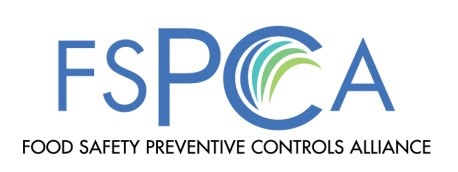
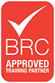

Jim has over 30 years of quality, GMP, HACCP and GFSI food safety food industry experience. His career includes occupations as an Assistant Plant Manager, Quality Manager, GFSI food safety auditor, Quality program development and trainer for numerous facility employees and management. Most recently Jim was the BRC Certification Manager for AIB International where he managed the audits, BRC audit technical reviews, auditor competency, and staffing. Jim's food sector experience includes bakeries, dry ingredients, Packaging (food contact and non contact), beverages (alcoholic and non alcoholic), confections, dairy and flavors.
FSMA has been signed into law. Its focus is on the prevention of food illness. Food companies will be required to have a food safety plan in place that meets the FSMA requirements. The plan needs to be developed by a Preventive Controls Qualified Individual (PCQI).
The Current Good Manufacturing Practice, Hazard Analysis, and Risk-based Preventive Controls for Human Food regulation (referred to as the Preventive Controls for Human Food regulation) is intended to ensure safe manufacturing/processing, packing and holding of food products for human consumption in the United States.
This course, developed by FSPCA, is the “standardized curriculum” recognized by FDA; successfully completing this course is one way to meet the requirements for a PCQI.
To becoming qualified as a PCQI you need to take the standardized training course taught by a "Preventive Controls Lead Instructor". This is an instructor that has applied to FSPCA, been accepted and completed the Lead Instructor training course.
I am a Lead Instructor for the FSPCA Preventive Controls for Human Food Course authorized to teach this standardized course, and will be offering the 2.5 day Preventive Controls for Human Food Course.
Please contact me if you would like to set up a private or public course.
--> If you're interested in taking this class please follow the instructions in this document.
Having training delivered conveniently to your work-site maintains the confidentiality of your systems and processes and enables the learning to be relevant to your workplace context. This strategy is particularly beneficial if you are seeking to review and improve on your operation and management systems. Training employees on-site enhances their learning capability by focusing on developing skills that are relevant to their work role. On-site delivery supports better transfer of knowledge and skills to the workplace.
Build on team dynamics:By drawing on the experiences of team members and engaging in structured professional conversations, your employees become more receptive towards change and embracing new initiatives. Reduced expenses: Save on travel and accommodation expenses and minimize the downtime involved with training employees off-site.
Greater information retention:One of the most fundamental methodologies in effective adult learning is team interaction. Review of learning through interactive discussions between participants after the completion of formal training is encouraged by our facilitators to enhance learning outcomes.
Request for Onsite Training Quote Onsite training at your company's location is an excellent option for 5 or more attendees:Contact me using the form below. I look forward to hearing from you.
Marasco Food Safety Consultant LLC realizes that it may be necessary for registrants to cancel or postpone training under certain circumstances. 30 days or longer before the start of the course, you may cancel and receive a full refund, or transfer to another session. In fairness to our other course attendees, please note the following Cancellation and Transfer Policy.